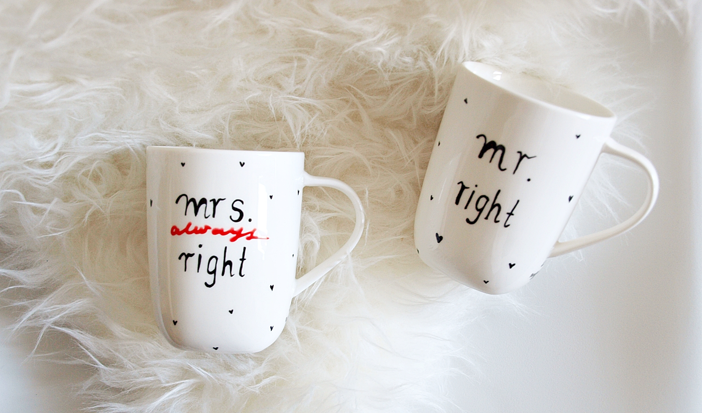

Dideli puodeliai | Žana internetinė indų parduotuvė
2020.10.30 02:50
Pristatymas Garantija ir grąžinimas Apie mus Žana indų salonai Kontaktai +37068717663 I-IV 8:15-17:00; V 8:15-15:45 0 0 Prisijungti Registruotis Prekių katalogas % Akcijos Prekiniai ženklai Indų nuoma % Išpardavimas Pristatymas Privatumo politika Grįžti atgal Kalėdinės prekės
Kalėdiniai žaisliukai
Išskleisti kategorijas SuskleistiKalėdiniai puodeliai
Išskleisti kategorijas SuskleistiKalėdinės lėkštės
Išskleisti kategorijas SuskleistiKalėdinės žvakės ir žvakidės
Išskleisti kategorijas SuskleistiKalėdinės dekoracijos
Išskleisti kategorijas SuskleistiKalėdinės lemputės
Išskleisti kategorijas Suskleisti Stalo serviravimo indaiLėkštės
Pietų lėkštės Lėkštės sriubai Lėkštės užkandžiams Serviravimo lėkštės Išskleisti kategorijas SuskleistiServizai
Pietų servizai Arbatos servizai Kavos servizai Išskleisti kategorijas SuskleistiDubenėliai ir salotinės
Dubenėliai Salotinės Padažinės Sultininės Išskleisti kategorijas SuskleistiStalo įrankiai
Šakutės Peiliai Šaukštai Šaukšteliai ... Išskleisti kategorijas SuskleistiPuodeliai
Kavos puodeliai Arbatos puodeliai Puodeliai su lėkštutėmis Dideli puodeliai ... Išskleisti kategorijas SuskleistiStiklinės
Aukštos stiklinės Žemos stiklinės Viskio stiklinės Dvigubo stiklo stiklinės Išskleisti kategorijas SuskleistiTaurės
Vyno taurės Šampano taurės Kokteilių taurės Alaus taurės ... Išskleisti kategorijas SuskleistiStikliukai ir taurelės
Stikliukai Taurelės Išskleisti kategorijas SuskleistiĄsočiai
Išskleisti kategorijas SuskleistiGrafinai
Išskleisti kategorijas SuskleistiIndai desertams
Išskleisti kategorijas SuskleistiPrieskoninės ir padažinės
Prieskoninės Indeliai actui ir aliejui Išskleisti kategorijas SuskleistiSviestinės
Išskleisti kategorijas SuskleistiStalo aksesuarai
Servetėlių laikikliai ir žiedai Stalo padėkliukai ir kilimėliai Dekoratyviniai padėklai Etažerės ... Išskleisti kategorijas SuskleistiSmulkūs serviravimo indai
Išskleisti kategorijas SuskleistiVaikiški indai
Išskleisti kategorijas SuskleistiTortinės
Išskleisti kategorijas Suskleisti Virtuvės reikmenysPuodai ir greitpuodžiai
Puodai Dideli puodai Ketaus puodai Puodų rinkiniai ... Išskleisti kategorijas SuskleistiKeptuvės ir dangčiai
Keptuvės Keptuvės lietiniams Ketaus keptuvės Wok keptuvės ... Išskleisti kategorijas SuskleistiKepimo formos
Stiklinės kepimo formos Metalinės kepimo formos Keramikinės kepimo formos Silikoninės kepimo formos ... Išskleisti kategorijas SuskleistiVirtuvės įrankiai
Sulčiaspaudės Samčiai ir kiaurasamčiai Koštuvai ir sieteliai Rankiniai plaktuvai ir grūstuvai ... Išskleisti kategorijas SuskleistiVirtuviniai peiliai ir galąstuvai
Virtuviniai peiliai Peilių blokai ir rinkiniai Peilių galąstuvai Peilių laikikliai Išskleisti kategorijas SuskleistiVirduliai, kavinukai ir arbatinukai
Kavinukai Arbatinukai Virduliai Kavinukų, arbatinukų aksesuarai Išskleisti kategorijas SuskleistiPjaustymo lentelės
Medinės pjaustymo lentelės Plastikinės pjaustymo lentelės Išskleisti kategorijas SuskleistiMaisto laikymo indai
Indai maisto laikymui Hermetiniai indai maisto laikymui Indai biriems produktams Termo krepšiai Išskleisti kategorijas SuskleistiGertuvės
Išskleisti kategorijas SuskleistiMetaliniai dubenys
Išskleisti kategorijas SuskleistiKonditerijos reikmenys
Išskleisti kategorijas SuskleistiSmulkūs virtuvės reikmenys
Išskleisti kategorijas SuskleistiFormelės ledukams
Išskleisti kategorijas SuskleistiVirtuviniai aksesuarai
Išskleisti kategorijas SuskleistiVirtuvės tekstilė
Išskleisti kategorijas SuskleistiDuoninės
Išskleisti kategorijas SuskleistiPicerijų reikmenys
Išskleisti kategorijas SuskleistiMatavimo prietaisai
Svarstyklės Termometrai Išskleisti kategorijas Suskleisti Namų interjeruiDirbtinės gėlės
Išskleisti kategorijas SuskleistiŽvakės
Išskleisti kategorijas SuskleistiŽvakidės
Išskleisti kategorijas SuskleistiStatulėlės
Išskleisti kategorijas SuskleistiDekoratyvinės dėžutės
Išskleisti kategorijas SuskleistiVazos
Išskleisti kategorijas SuskleistiAksesuarai
Išskleisti kategorijas SuskleistiKvapai
Kvapai namams Difuzoriai Parfumuotos kortelės Parfumuotos žvakės Išskleisti kategorijas SuskleistiMaison Berger kvapų lempos ir namų kvapai
Maison Berger kvapų lempos Maison Berger kvapų lempų papildymai Maison Berger namų kvapai Maison berger namų kvapų papildymai ... Išskleisti kategorijas Suskleisti Namų apyvokos reikmenysŠiukšliadėžės
Išskleisti kategorijas SuskleistiLyginimo lentos
Išskleisti kategorijas SuskleistiIndų džiovyklos
Išskleisti kategorijas SuskleistiDaiktų laikymo dėžės
Išskleisti kategorijas SuskleistiMuilinės ir muilo dozatoriai
Išskleisti kategorijas SuskleistiVonios kambario aksesuarai
Išskleisti kategorijas SuskleistiRankšluosčiai
Išskleisti kategorijas SuskleistiMuilai
Išskleisti kategorijas Suskleisti Baro reikmenysKokteilių plaktuvės
Išskleisti kategorijas SuskleistiKamščiatraukiai
Išskleisti kategorijas SuskleistiLedo kibirėliai
Išskleisti kategorijas SuskleistiMenzūros
Išskleisti kategorijas SuskleistiAtidarytuvai
Išskleisti kategorijas SuskleistiŠiaudeliai
Išskleisti kategorijas SuskleistiSmulkūs baro reikmenys
Išskleisti kategorijas Suskleisti Pobūviams, pusryčių stalui ir maisto išvežimuiGN indai
Metaliniai GN indai Plastikiniai GN indai GN indų dangčiai Išskleisti kategorijas SuskleistiVirtuviniai padėklai
Išskleisti kategorijas SuskleistiMarmitai
Išskleisti kategorijas SuskleistiServiravimo indai
Išskleisti kategorijas SuskleistiPerkolatoriai
Išskleisti kategorijas SuskleistiTermosai
Išskleisti kategorijas SuskleistiMelamino indai
Išskleisti kategorijas SuskleistiKonditeriniai stovai ir gaubtai
Išskleisti kategorijas SuskleistiGėrimų dalytuvai
Išskleisti kategorijas Suskleisti Profesionali virtuvės įrangaŠaldymo įranga
Išskleisti kategorijas SuskleistiSmulki virtuvės įranga
Išskleisti kategorijas Suskleisti Vienkartiniai indai ir pakavimasVienkartiniai indai maisto išsinešimui
Išskleisti kategorijas SuskleistiVienkartinės lėkštės
Išskleisti kategorijas SuskleistiVienkartiniai stalo įrankiai
Išskleisti kategorijas SuskleistiVienkartiniai puodeliai, stiklinės ir taurės
Išskleisti kategorijas SuskleistiMaisto pakavimo prekės
Išskleisti kategorijas SuskleistiVienkartiniai padėklai
Išskleisti kategorijas Suskleisti Dovanų čekiai Visos KategorijosFiltras
Stalo serviravimo indai
Puodeliai
Kavos puodeliai Arbatos puodeliai Puodeliai su lėkštutėmis Dideli puodeliai Puodelių rinkiniai Termo puodeliai Puodelių aksesuarai Visos KategorijosPrekės ženklas
ASA
Bormioli Rocco
Easy Life
Luminarc
Maxwell & Williams
Tadar
Wilmax
DaugiauKaina
Pagaminta iš
Grūdintas stiklas
Nerūdijantis plienas
Porcelianas
Stiklas
Serija
Coppa
Jumbo Nuevo
Kitcen Elements
Mistigri
Nuevo
Quattro
DaugiauTūris
0.4 L
0.5 L
0.55 L
0.58 L
0.72 L
400 ml
450 ml
460 ml
DaugiauSpalva
Balta
Juoda
Oranžinė
Raudona
Skaidri
Turkio
Žalia
DaugiauGamintojas
Asa
Bormioli Rocco
Easy Life
Luminarc
Maxwell & Williams
Tadar
Wilmax
DaugiauPrekių grupė
Dideli puodeliai
Puodeliai
Puodeliai arbatai
Kolekcija
Julia
Jumbo
Išvalyti filtrus Atlikta Pagrindinis Stalo serviravimo indai Puodeliai Dideli puodeliaiDideli puodeliai
Filtras RūšiuotiRūšiuoti
Rodyti per puslapį 36 64 128 per puslapį Rūšiuoti pagal Pigiausi viršuje Brangiausi viršuje Naujausios prekės Perkamiausios prekės Geriausiai įvertintos prekės AtliktaIndas su rankena Bormioli Rocco QUATTRO, 415 ml
2,40 €
1,49 €sutaupote: 0.91 €
Į krepšelį PlačiauNerūdijančio plieno puodelis Tadar, 10 cm 500 ml
1,59 € Į krepšelį PlačiauPuodelis Luminarc NUEVO, 400 ml
1,75 € Į krepšelį PlačiauDidelis skaidrus puodelis Luminarc JUMBO, 500 ml
1,88 € Į krepšelį PlačiauPuodelis sriubai Luminarc JUMBO NUEVO, 500 ml
2,89 € Į krepšelį PlačiauPorcelianinis puodelis Wilmax, 550 ml
4,50 € Į krepšelį PlačiauPorcelianinis puodelis Wilmax, 500 ml
4,50 € Į krepšelį PlačiauPorcelianinis puodelis Wilmax JULIA, 500 ml
4,90 € Į krepšelį PlačiauPorcelianinis puodelis Wilmax, 580 ml
5,10 € Į krepšelį PlačiauPuodelis sultiniui Luminarc JUMBO MISTIGRI, 720 ml
6,79 € Į krepšelį PlačiauBaltas porcelianinis kavos puodelis su ornamentais Easy Life KITCHEN ELEMENTS, 400 ml
7,10 € Į krepšelį PlačiauPorcelianinis oranžinis puodelis Asa COPPA, 400 ml
10,00 € Į krepšelį PlačiauPorcelianinis puodelis turkio spalvos Asa COPPA, 400 ml
10,00 € Į krepšelį PlačiauPorcelianinis baltas puodelis Asa COPPA, 400 ml
10,00 € Į krepšelį PlačiauPorcelianinis žalias puodelis Asa COPPA, 400 ml
10,00 € Į krepšelį PlačiauPorcelianinis raudonas puodelis Asa COPPA, 400 ml
10,00 € Į krepšelį PlačiauPorcelianinis juodas puodelis Asa COPPA, 400 ml
10,00 € Į krepšelį PlačiauPuodelis Maxwell & Williams Cottage Blossom, 400 ml
11,50 € Į krepšelį PlačiauPuodelis Maxwell & Williams Midnight Blossom, 400 ml
11,50 € Į krepšelį PlačiauPuodelis Maxwell & Williams Victorian Garden, 400 ml
11,50 € Į krepšelį PlačiauPuodelis Maxwell & Williams Carnaby s Cockatoo, 450 ml
13,90 € Į krepšelį PlačiauPuodelis su lėkštute Maxwell & Williams Midnight Blossom, 460 ml
25,50 € Į krepšelį PlačiauPrekių katalogas
Sumažinta kaina Naujos prekės Perkamiausios prekėsInformacija klientams
Pristatymas Privatumo politika Garantija ir grąžinimas Apie mus Pirkimo-pardavimo taisyklės Kontaktai Žana indų salonaiTavo paskyra
Asmeninė informacija Užsakymai Adresai Mano asortimentas Mano duomenysBendraukime
Žana - Indų salonų tinklas Neradai tai ko ieškojai ? Apsilankyk mūsų
parduotuvėse:
© 2012-2020 UAB "Arkietė" | zana.lt
Taikos pr. 100C, Kaunas, Lietuva
Model Popup